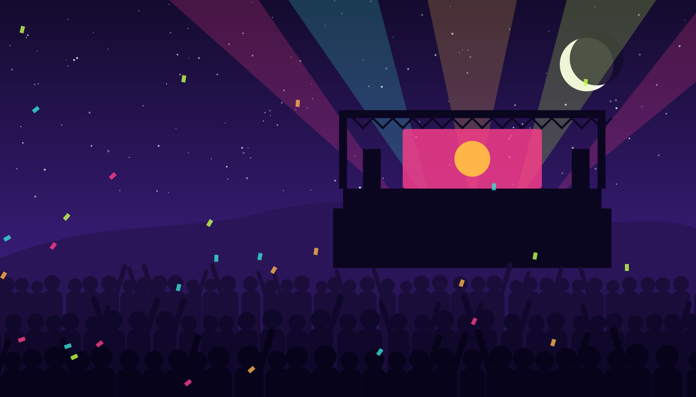
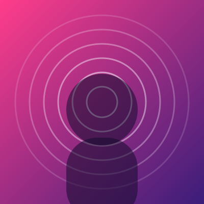
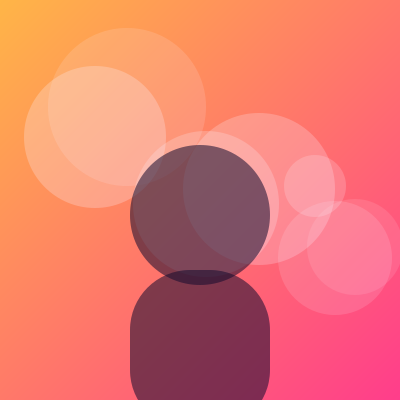
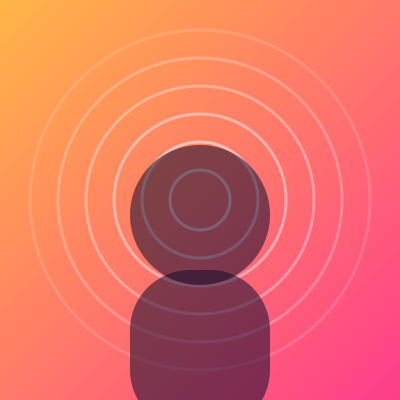
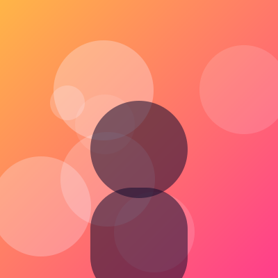

16–18 July 2027 · Larkspur Valley
Three nights of music under the open sky
Eighteen artists, three stages, a lake to swim in and a meadow to camp in. The summer weekend you will talk about all year.
Line-up 2027
Who plays when
Pick a day to see the artists, stage times and stages. Headliners close the main stage every night.
Friday 16 July

Lumen Harbor
Indie pop
· Main stage
Fennel & Fox
Folk
· Lakeside
The Velvet Owls
Garage rock
· Main stage

Kaia Morrow
Soul
· Grove stage
Static Gardens
Synthwave
· Grove stage
DJ Paloma
House
· Lakeside
Saturday 17 July
Silver Kingfishers
Stadium rock
· Main stage
Olive Branch Band
Reggae
· Lakeside
Sol Castellano
Latin jazz
· Lakeside
Mira Saint
Alt R&B
· Main stage
The Paper Lanterns
Dream pop
· Grove stage

Neon Tide
Electronic
· Grove stage
Sunday 18 July
Maple Avenue Parade
Indie rock
· Main stage
Wren & Willow
Acoustic
· Lakeside
June Okafor
Afrobeats
· Main stage

Paper Satellites
Art pop
· Grove stage
Loud Library
Punk
· Grove stage
Lunar Choir
Ambient
· Lakeside
Festival map
Find your way around the valley
All three stages are within a ten-minute walk. Water points, first aid and quiet zones are marked on the map in the festival app.
- Main stage
- Grove stage in the woods
- Lakeside stage
- Food court and bars
Good to know
Plan your weekend
Getting there
Free shuttle buses from Larkspur station every 15 minutes. Car parking must be booked in advance.
Camping
The Meadow campsite opens on Thursday at noon, with showers, charging tents and a quiet area.
Accessibility
Viewing platforms at every stage, accessible toilets and free carer tickets. Ask us what you need.
Leave no trace
Reusable cups, free water refills and a deposit on every can. Last year we recycled 82% of all waste.
Can I bring my own food and drinks?
Food yes, sealed soft drinks up to 1.5 litres too. Glass and alcohol are not allowed into the arena.
Is there an age limit?
Children under 12 enter free with an adult. Under 16s must be accompanied by an adult with a ticket.
What happens if it rains?
The show goes on. Bring a raincoat; umbrellas are not allowed in front of the stages.
Be first to hear the next names
New artists, set times and ticket releases, about twice a month.